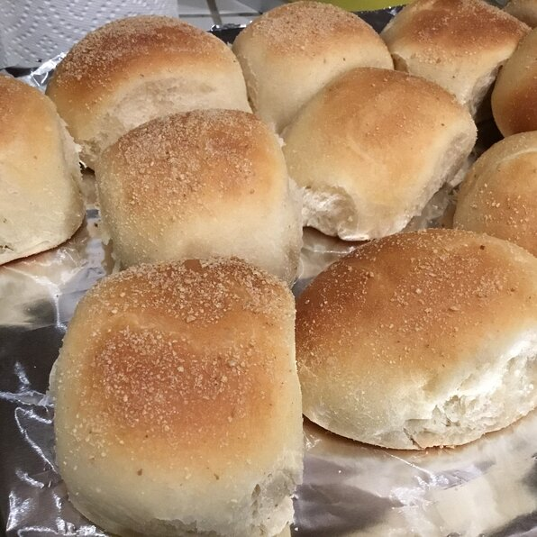

Pandesal

Description
A slightly sweet, soft and fluffy white bread roll that tastes amazing with salty cheese.
Ingredients
- 1/2 cups warm milk
- 3/4 cup white sugar, divided
- 1 (.25 ounce) package active dry yeast
- 4 cups bread flour
- 2 teaspoons salt
- 1/4 cup vegetable oil
- 1 cup bread crumbs
Steps
- Combine milk, 2 teaspoons sugar, and yeast in a large bowl; stir until sugar and yeast are fully dissolved, about 5 minutes.
- Mix remaining sugar, flour, and salt together in a large bowl. Pour in milk mixture and vegetable oil. Mix until dough comes together.
- Turn dough out onto a flat work surface. Knead until smooth. Shape into a ball and return to the bowl. Cover with a damp cloth and let rise until doubled, at least 1 hour.
- Divide dough into 4 equal portions using a bench knife. Roll each portion into a log; slice diagonally into 1-inch pieces.
- Pour bread crumbs onto a large plate. Roll each piece of dough in bread crumbs and place on a baking sheet lined with parchment paper. Let rise until puffy, 30 to 45 minutes.
- Preheat oven to 375 degrees F (190 degrees C).
- Bake in the preheated oven until golden brown, 15 to 20 minutes.